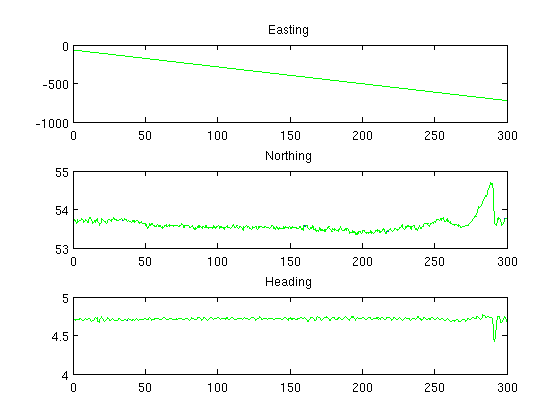
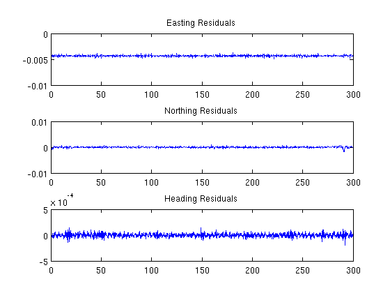
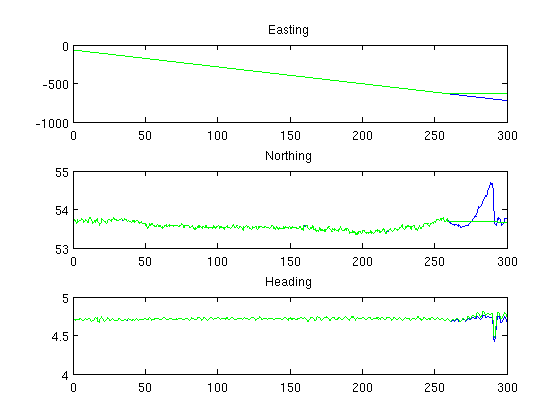
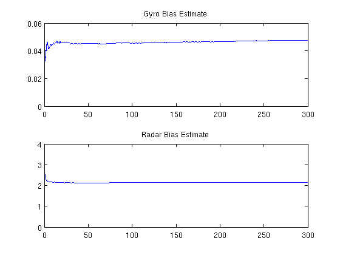
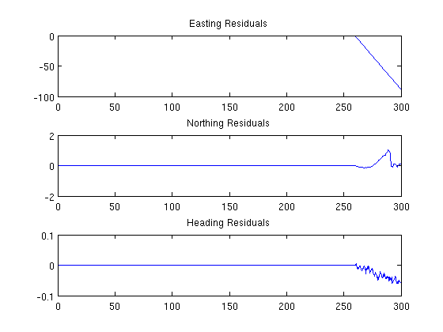

Contents
Homework 4 - Problem 3
Design a “Navigation” type Kalman filter to estimate the states [East, North,Radar_Bias, Psi, Gyro_Bias]. (Note: this is a non-linear problem that requires an Extended Kalman Filter (EKF) to do correctly. However we can solve the problem in one of two ways: (i) linearize the equations about the nominal operating point and produce a constant A matrix for that operating point, or (ii) simply update the A matrix at every time step with our measurements or estimates. Download the data hw4_3 from the website and run the filter sampled at 5 Hz.
clear; clc; close all; load hw4_3.txt; t = hw4_3(:,1); y = hw4_3(:,2:4); u = hw4_3(:,5:6);
Part A
A = zeros(5); B = zeros(5,2); C = [eye(3),zeros(3,2)]; D = zeros(3,2); sys = ss(A,B,C,D,... 'inputname',{'gyro','radar'},... 'statename',{'e','n','psi','b_gyro','b_radar'}); x_hat = zeros(5,length(t)); P = 1000*eye(5); Q_d = 0.001 * eye(5); Q_d(1:3,1:3) = 10 * eye(3); R_d = 0.1 * eye(3); for ii = 1:length(t), sys.a = [ 0, 0, 0, 0, -cos(x_hat(3,ii)); 0, 0, 0, 0, -sin(x_hat(3,ii)); 0, 0, 0,-1, 0; 0, 0, 0, 0, 0; 0, 0, 0, 0, 0]; sys.b = [0,cos(x_hat(3,ii)); 0,sin(x_hat(3,ii)); 1,0; 0,0; 0,0]; dsys = c2d(sys,0.2); % Compute Kalman Gain L = P * dsys.C'/(dsys.C*P*dsys.C' + R_d); x_hat(:,ii) = x_hat(:,ii) + L * (y(ii,:)' - dsys.C * x_hat(:,ii)); P = (eye(5) - L*dsys.C)*P; % Propagate Forward x_hat(:,ii+1) = dsys.A * x_hat(:,ii) + dsys.B*u(ii,:)'; P = dsys.A * P * dsys.A' + Q_d; end figure(); subplot(3,1,1); plot(t,y(:,1),t,x_hat(1,1:end-1),'g'); title('Easting'); subplot(3,1,2); plot(t,y(:,2),t,x_hat(2,1:end-1),'g'); title('Northing'); subplot(3,1,3); plot(t,y(:,3),t,x_hat(3,1:end-1),'g'); title('Heading'); figure(); subplot(2,1,1); plot(t,x_hat(4,1:end-1)); title('Gyro Bias Estimate'); subplot(2,1,2); plot(t,x_hat(5,1:end-1)); title('Radar Bias Estimate'); figure(); subplot(3,1,1); plot(t,y(:,1) - x_hat(1,1:end-1)'); title('Easting Residuals'); subplot(3,1,2); plot(t,y(:,2) - x_hat(2,1:end-1)'); title('Northing Residuals'); subplot(3,1,3); plot(t,y(:,3) - x_hat(3,1:end-1)'); title('Heading Residuals'); gyro_bias = x_hat(4,end) radar_bias = x_hat(5,end)
gyro_bias =
0.0479
radar_bias =
2.1355
  I choose my covariance values for the first three states by just picking something that was "safe". I assumed on navigation data, 10 centimeters would be where most of the noise was. For the constants, I choose a very small value so that the filter would not go to sleep.
Part B
How does this compare to least squares?
The value that least squares produces is close to what the Kalman filter came up with. The plot of recursive least squares looks identical to the Kalman filter "going to sleep" with Qd set to 0. The Kalman filter continues to take measurement updates into the system, so the final bias values end up being slightly different
H_gyro = [ones(length(u),1)]; x_gyro_ls = (pinv(H_gyro) * u(:,1))' H_radar = [ones(length(u),1)]; x_radar_ls = (pinv(H_radar) * u(:,2))' P = 1e2 * eye(2); x = zeros(2,length(u)); for ii=2:length(u), H = [1;0]; g_hat = H' * x(:,ii-1); error = g_hat - u(ii,1); x(:,ii) = x(:,ii-1) - P*H*(1 + H'*P*H)^-1 * error; P = P - P*H*(1 + H' * P * H)^-1 * H' * P; end x_gyro_rls = x(1,length(u)) P = 1e2 * eye(2); x = zeros(2,length(u)); for ii=2:length(u), H = [1;0]; g_hat = H' * x(:,ii-1); error = g_hat - u(ii,2); x(:,ii) = x(:,ii-1) - P*H*(1 + H'*P*H)^-1 * error; P = P - P*H*(1 + H' * P * H)^-1 * H' * P; end x_radar_rls = x(1,length(u))
x_gyro_ls =
0.0470
x_radar_ls =
2.1314
x_gyro_rls =
0.0470
x_radar_rls =
2.1314
Part C
With straight integration at the end.
While the integration portion is far from perfect, it shows that the Kalman filter can continue to run on it's own without any additional sensor input. The biases remain constant because the only way they are updated is through measurements.
A = zeros(5); B = zeros(5,2); C = [eye(3),zeros(3,2)]; D = zeros(3,2); sys = ss(A,B,C,D,... 'inputname',{'gyro','radar'},... 'statename',{'e','n','psi','b_gyro','b_radar'}); x_hat = zeros(5,length(t)); P = 1000*eye(5); Q_d = 0.001 * eye(5); Q_d(1:3,1:3) = 10 * eye(3); R_d = 0.1 * eye(3); for ii = 1:length(t)-200, sys.a = [ 0, 0, 0, 0, -cos(x_hat(3,ii)); 0, 0, 0, 0, -sin(x_hat(3,ii)); 0, 0, 0,-1, 0; 0, 0, 0, 0, 0; 0, 0, 0, 0, 0]; sys.b = [0,cos(x_hat(3,ii)); 0,sin(x_hat(3,ii)); 1,0; 0,0; 0,0]; dsys = c2d(sys,0.2); % Compute Kalman Gain L = P * dsys.C'/(dsys.C*P*dsys.C' + R_d); x_hat(:,ii) = x_hat(:,ii) + L * (y(ii,:)' - dsys.C * x_hat(:,ii)); P = (eye(5) - L*dsys.C)*P; % Propagate Forward x_hat(:,ii+1) = dsys.A * x_hat(:,ii) + dsys.B*u(ii,:)'; P = dsys.A * P * dsys.A' + Q_d; end C = zeros(3,5); for ii = length(t)-200:length(t) sys.a = [ 0, 0, 0, 0, -sin(x_hat(3,ii)); 0, 0, 0, 0, -cos(x_hat(3,ii)); 0, 0, 0,-1, 0; 0, 0, 0, 0, 0; 0, 0, 0, 0, 0]; sys.b = [0,sin(x_hat(3,ii)); 0,cos(x_hat(3,ii)); 1,0; 0,0; 0,0]; dsys = c2d(sys,0.2); L = P * dsys.C'/(dsys.C*P*dsys.C' + R_d); %x_hat(:,ii) = x_hat(:,ii) + L * (y(ii,:)' - dsys.C * x_hat(:,ii)); P = (eye(5) - L*dsys.C)*P; % Propagate Forward x_hat(:,ii+1) = dsys.A * x_hat(:,ii) + dsys.B*u(ii,:)'; P = dsys.A * P * dsys.A' + Q_d; end figure(); subplot(3,1,1); plot(t,y(:,1),t,x_hat(1,1:end-1),'g'); title('Easting'); subplot(3,1,2); plot(t,y(:,2),t,x_hat(2,1:end-1),'g'); title('Northing'); subplot(3,1,3); plot(t,y(:,3),t,x_hat(3,1:end-1),'g'); title('Heading'); figure(); subplot(2,1,1); plot(t,x_hat(4,1:end-1)); title('Gyro Bias Estimate'); subplot(2,1,2); plot(t,x_hat(5,1:end-1)); title('Radar Bias Estimate'); figure(); subplot(3,1,1); plot(t,y(:,1) - x_hat(1,1:end-1)'); title('Easting Residuals'); subplot(3,1,2); plot(t,y(:,2) - x_hat(2,1:end-1)'); title('Northing Residuals'); subplot(3,1,3); plot(t,y(:,3) - x_hat(3,1:end-1)'); title('Heading Residuals'); gyro_bias = x_hat(4,end) radar_bias = x_hat(5,end)
gyro_bias =
0.0475
radar_bias =
2.1445
  